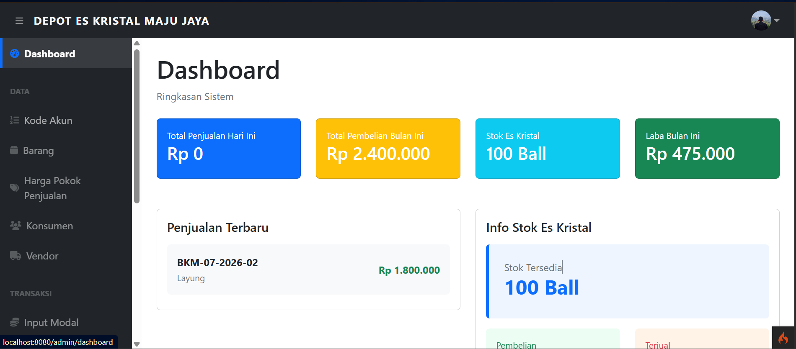
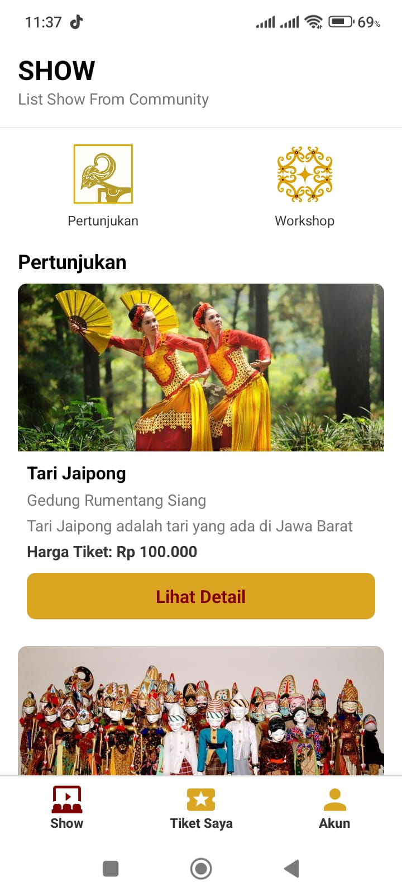
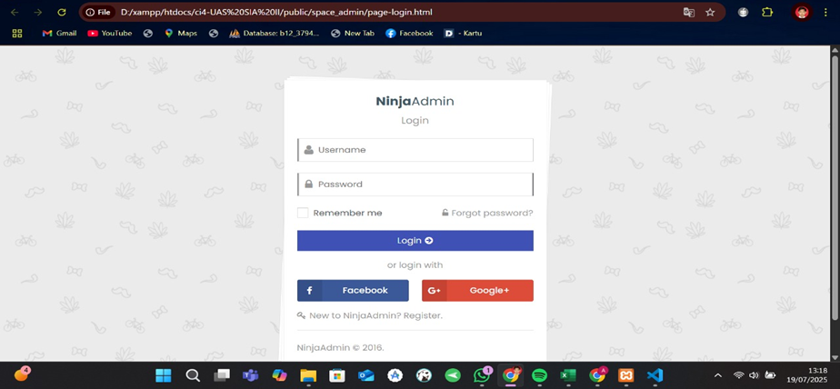
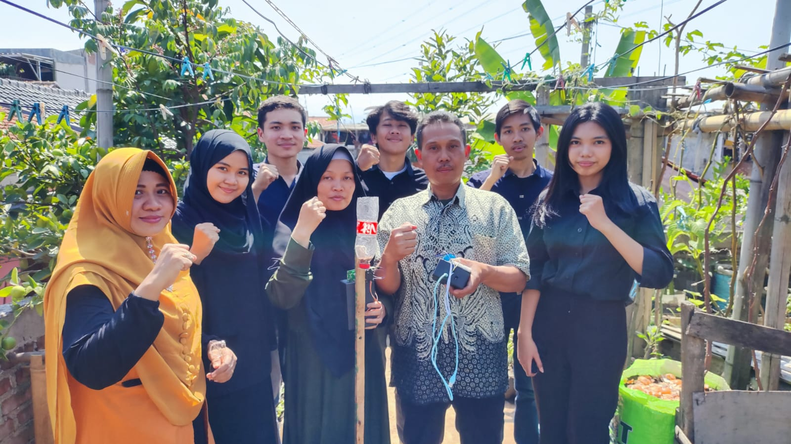
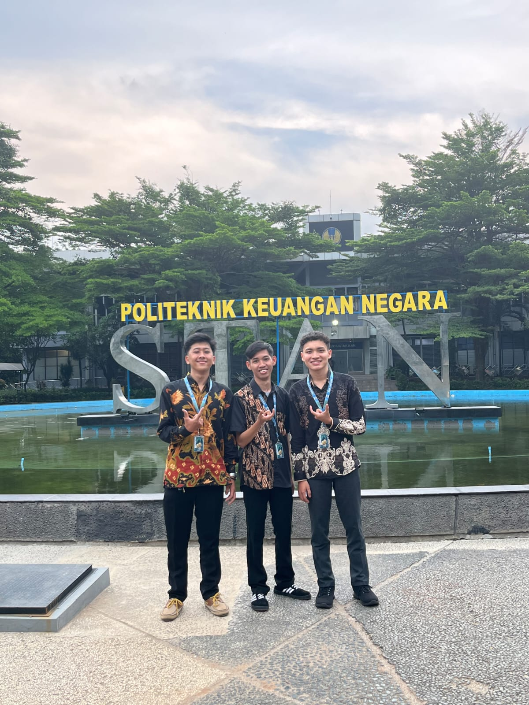
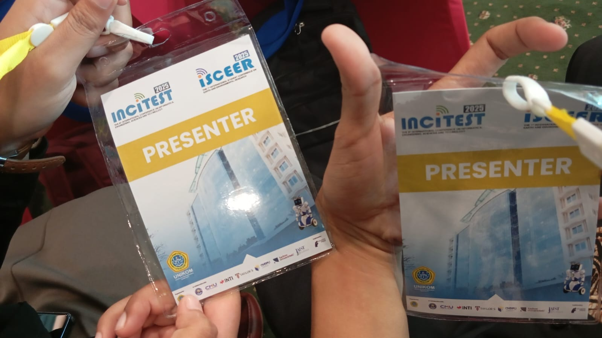

Lulusan D3 Komputerisasi Akuntansi. Menggabungkan keahlian sistem pelaporan keuangan dengan implementasi teknologi informasi, web development, dan infrastruktur jaringan.
guest@portfolio:~$ cat about.txt
Lulusan D3 Komputerisasi Akuntansi dari Universitas Komputer Indonesia dengan IPK 3.92/4.00. Antusias di bidang Sistem Akuntansi, Jaringan, serta Pengembangan Web.
Individu berdedikasi, cepat beradaptasi, dan berkomitmen untuk terus berkembang dalam mengintegrasikan sistem pelaporan dengan efisiensi IT.
Jalan Cilengkrang 1, Bandungrizkinuraini158@gmail.com
Web Developer
Membangun aplikasi web dan integrasi database (CodeIgniter & MySQL).
Accounting System
Perancangan sistem informasi pelaporan dan pencatatan keuangan bisnis.
Network Engineer
Konfigurasi infrastruktur jaringan, routing, dan switching (Sertifikasi CCNA).
Accounting App
Penggunaan software akuntansi seperti MYOB untuk pengolahan data terkomputerisasi.
// 02. Eksekusi
Project Repository
WEB / TA

Aplikasi Akuntansi Maju Jaya
Perancangan Sistem Informasi Akuntansi Laporan Keuangan Laba Rugi pada Depot Es Kristal Maju Jaya.
CODEIGNITER 4MYSQL
WEB

Aplikasi SeniKA
Pengembangan aplikasi pendukung berbasis Expo Go dan integrasi dengan command terminal.
EXPO GOTERMINAL
WEB

SIA Khamsah Khalifah
Pembuatan Sistem Informasi Akuntansi Laporan Posisi Keuangan untuk manajemen keuangan yang presisi.
PHPMYSQL
WEB
SIA Persediaan Kosmart
Sistem Informasi Akuntansi Manajemen Persediaan pada Kosmart (Koperasi Smart Building UNIKOM).
WEB DEVINVENTORY
INNOVATION / PKM

AutoFish Berbasis Android
Proyek Inovasi (PKM): Pendeteksi pakan otomatis, kejernihan air, dan ketepatan panen Budidamber. Bertindak sebagai Ketua Tim pengelola laporan kemajuan, akhir, & medsos.
PROJECT MANAGERIOT & ANDROID
PROSIDING

Prosiding SEMBADHA
Peningkatan Kualitas Produk Dan Dampak Pencemaran Limbah Budidaya Ikan Pada Usaha Kecil Putra Putri Ikan Menggunakan Autofish Berbasis Android.
RESEARCHACADEMIC
SINTA 5

Jurnal INJURATECH
Designing An Accounting Information System For Financial Position Reports In A Garment Business Using Php And Mysql.
SINTA 5ACCOUNTING SYSTEM
// 03. Log Sistem
TECH_STACK
CODEIGNITER 4PHPMYSQLCCNAMYOBEXPO GOHTML/CSS
Pengalaman Kerja
Kerja Praktik / Bagian Arsip
Sep 2024 — Oct 2024
Balai Geoteknik, Terowongan dan Struktur - Bandung
> Melakukan digitalisasi dokumen fisik melalui proses pemindaian (scanning) dan pengarsipan data ke media penyimpanan portabel secara presisi.
> Mengelola dan mengorganisasikan database dokumen secara online menggunakan cloud storage (Google Drive).
> Bertanggung jawab atas efisiensi alur logistik toko dan eksekusi bongkar muat barang supplier.
Kerja Praktik / Teknisi Komputer
Dec 2019 — Mar 2020
Badan Pengelolaan dan Aset Daerah (Gedung Sate) - Bandung
> Menangani perbaikan dan optimalisasi (troubleshooting) hardware.
> Memastikan stabilitas konektivitas jaringan komputer kantor dengan melakukan instalasi kabel LAN.
Jenjang Pendidikan
D3 Komputerisasi Akuntansi
Sep 2023 — Oct 2026 (Perk.)
Universitas Komputer Indonesia - Bandung
> IPK: 3.92/4.00
> Tugas Akhir: "Perancangan Sistem Informasi Akuntansi Laporan Keuangan Laba Rugi Menggunakan CodeIgniter 4 dan MySQL pada Depot Es Kristal Maju Jaya".
SMK — Teknik Komputer & Jaringan
Jul 2018 — Jun 2021
SMK Muhammadiyah 2 Cibiru - Bandung
> Nilai: 87.00/100.00
> Memperdalam kompetensi teknis jaringan komputer, routing, dan switching.
Pengalaman Organisasi
Divisi Pengembangan Potensi
Jan 2025 — Nov 2025
Himpunan Mahasiswa Komputerisasi Akuntansi
> Memimpin divisi untuk memfasilitasi pengembangan potensi teknis dan kepemimpinan.
> Ketua Pelaksana Latihan Dasar Kepemimpinan (LDK) dan Company Visit (OJK).
> Menginisiasi Workshop Pengembangan Web (Laravel 11) bersama alumni.
Anggota Divisi PDD (Publikasi, Dekorasi, & Dokumentasi)
Jan 2024 — Dec 2024
Kepanitiaan / Organisasi
> Mendokumentasikan kegiatan dan mengunggah aset visual (foto) ke media penyimpanan cloud.
> Mengelola dan membagikan akses folder Google Drive kepada peserta dan anggota secara tertib.
Anggota
Jan 2019 — Dec 2019
Ikatan Pelajar Muhammadiyah
> Berpartisipasi aktif dalam merencanakan program kerja kepemudaan serta kegiatan sosial.
// 04. Sertifikasi & Penghargaan
Certificates & Awards
2026
Jaringan Komputer (UNIKOM)
Sertifikasi kompetensi teknis meliputi praktik merakit komputer, instalasi OS Windows, pembuatan kabel LAN, dan troubleshooting PC.
Penghargaan untuk paper: "Designing An Accounting Information System For Financial Position Reports In A Garment Business Using Php And Mysql" (SINTA 5).
Sertifikat presentasi paper: "Peningkatan Kualitas Produk dan Dampak Pencemaran Limbah Budidaya Ikan Pada Usaha Kecil Putra Putri Ikan Menggunakan AUTOFISH: Alat Pemberi Makan Otomatis dan Deteksi Kejernihan Air Berbasis Android".
Membuat desain jaringan LAN/WAN/WLAN, instalasi & konfigurasi TCP/IP dinamis & statis, konfigurasi firewall pada router, pengujian hotspot, serta bloking akses/file.